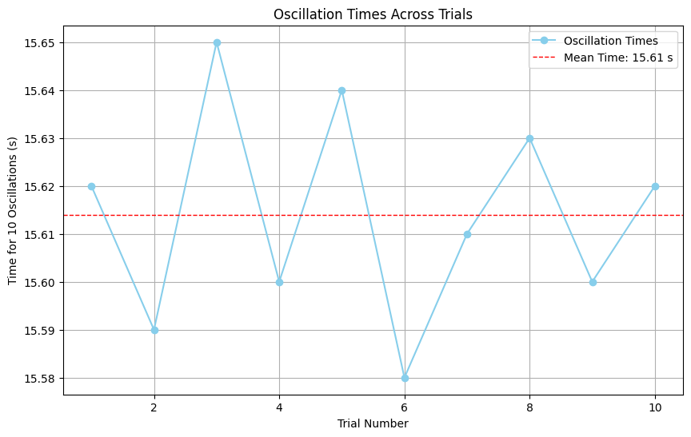

Problem 1
Measuring Earth's Gravitational Acceleration with a Pendulum
Motivation
The acceleration \(g\) due to gravity is a fundamental physical constant that governs the motion of objects in a gravitational field. This experiment explores how a simple pendulum can be used to determine \(g\) accurately, emphasizing the importance of precise measurements and uncertainty analysis in experimental physics.
Deliverables
Calculations and Results
-
Mean period: \(\overline{T}_{10}\)
-
Period of one oscillation: \(T \pm \Delta T\)
-
Measured \(g \pm \Delta g\)
Procedure
Materials
- A string (1 or 1.5 meters long)
- A small weight (e.g., bag of coins, bag of sugar, key chain)
- Stopwatch or smartphone timer
- Ruler or measuring tape
Setup
\(1\). Attach the weight to the string and secure the other end to a sturdy support.
\(2\). Measure the length of the pendulum, \(L\), from the suspension point to the center of the weight using a ruler or measuring tape.
- Record the resolution of the measuring tool (e.g., 1 mm).
- Calculate the uncertainty in \(L\) as half the resolution:
$$ \Delta L = \frac{\text{Resolution}} {2}$$
Data Collection
\(1\). Displace the pendulum slightly (\(<15^\circ\)) and release it.
\(2\). Measure the time for 10 full oscillations (\(T_{10}\)) using a stopwatch.
\(3\). Repeat the measurement 10 times to obtain 10 values of \(T_{10}\).
\(4\). Calculate:
- The mean time for 10 oscillations: \(\overline{T}_{10} = \frac{\sum T_{10}}{10}\).
- The standard deviation: \(\sigma_{T_{10}} = \sqrt{\frac{\sum (T_{10} - \overline{T}_{10})^2}{n - 1}}\), where \(n = 10\).
- The uncertainty in the mean: \(\Delta \overline{T}_{10} = \frac{\sigma_{T_{10}}}{\sqrt{n}}\).
Calculations
1. Calculate the Period
The period of one oscillation is:
The uncertainty in \(T\) is:
2. Determine \(g\)
Using the formula for the period of a pendulum:
Rearranging for \(g\):
The uncertainty in \(g\) is propagated as:
Simulation
Below is the Python implementation of Buffon’s Needle method:
import numpy as np
import matplotlib.pyplot as plt
# Function to calculate uncertainties
def calculate_uncertainties(L, delta_L, times):
n = len(times)
mean_time_10 = np.mean(times)
std_dev_time_10 = np.std(times, ddof=1)
delta_mean_time_10 = std_dev_time_10 / np.sqrt(n)
T = mean_time_10 / 10
delta_T = delta_mean_time_10 / 10
g = (4 * np.pi**2 * L) / T**2
delta_g = g * np.sqrt((delta_L / L)**2 + (2 * delta_T / T)**2)
return T, delta_T, g, delta_g
# Data collection (Example Values)
L = 1.0 # Pendulum length in meters
delta_L = 0.001 # Uncertainty in length in meters
times = [15.62, 15.59, 15.65, 15.60, 15.64, 15.58, 15.61, 15.63, 15.60, 15.62] # Time for 10 oscillations in seconds
# Perform calculations
T, delta_T, g, delta_g = calculate_uncertainties(L, delta_L, times)
# Display results
print("Mean Period for 1 Oscillation (T): {:.4f} s ± {:.4f} s".format(T, delta_T))
print("Gravitational Acceleration (g): {:.4f} m/s^2 ± {:.4f} m/s^2".format(g, delta_g))
# Visualization
plt.figure(figsize=(10, 6))
plt.plot(range(1, len(times) + 1), times, marker='o', linestyle='-', color='skyblue', label='Oscillation Times')
plt.axhline(np.mean(times), color='red', linestyle='dashed', linewidth=1, label=f"Mean Time: {np.mean(times):.2f} s")
plt.xlabel("Trial Number")
plt.ylabel("Time for 10 Oscillations (s)")
plt.title("Oscillation Times Across Trials")
plt.legend()
plt.grid()
plt.show()

Analysis
- Compare your experimental value of \(g\) with the standard value \(9.81 \, \text{m/s}^2\).
- Explore how the precision of \(L\) and \(T_{10}\) affects the final uncertainty in g.
- Discuss the variability in \(T_{10}\) measurements and its impact on the mean period and uncertainty.
Discussion
* Assumptions and Limitations:
* Assume air resistance and friction at the pivot are negligible.
* Small-angle approximation (\(<15^\circ\)) is used to ensure the formula for \(g\) is valid.